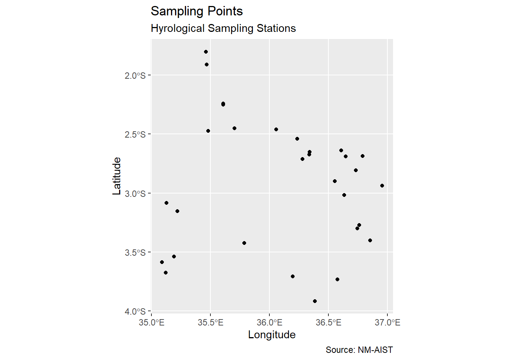
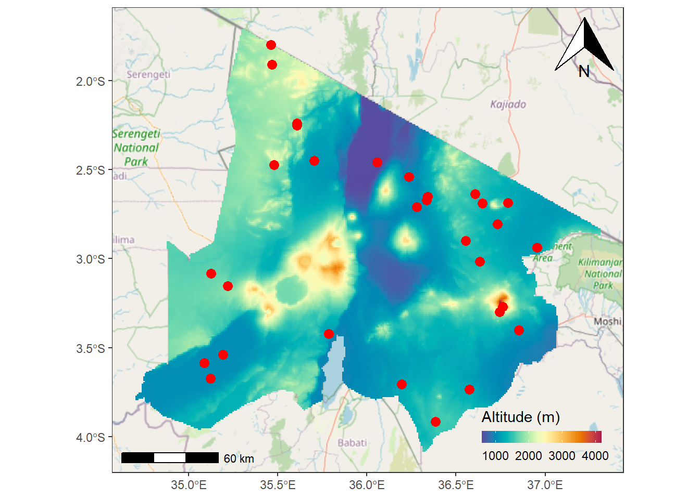
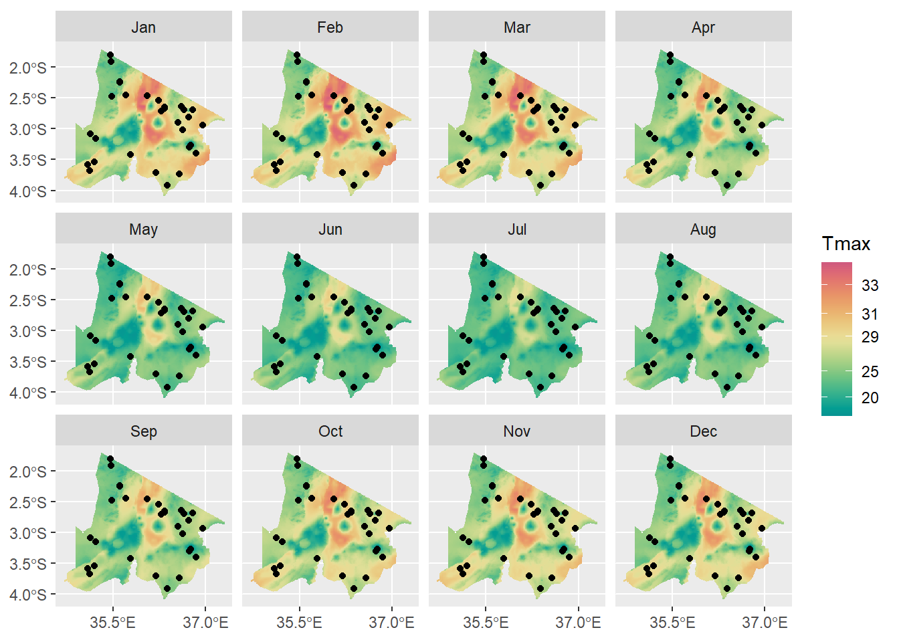
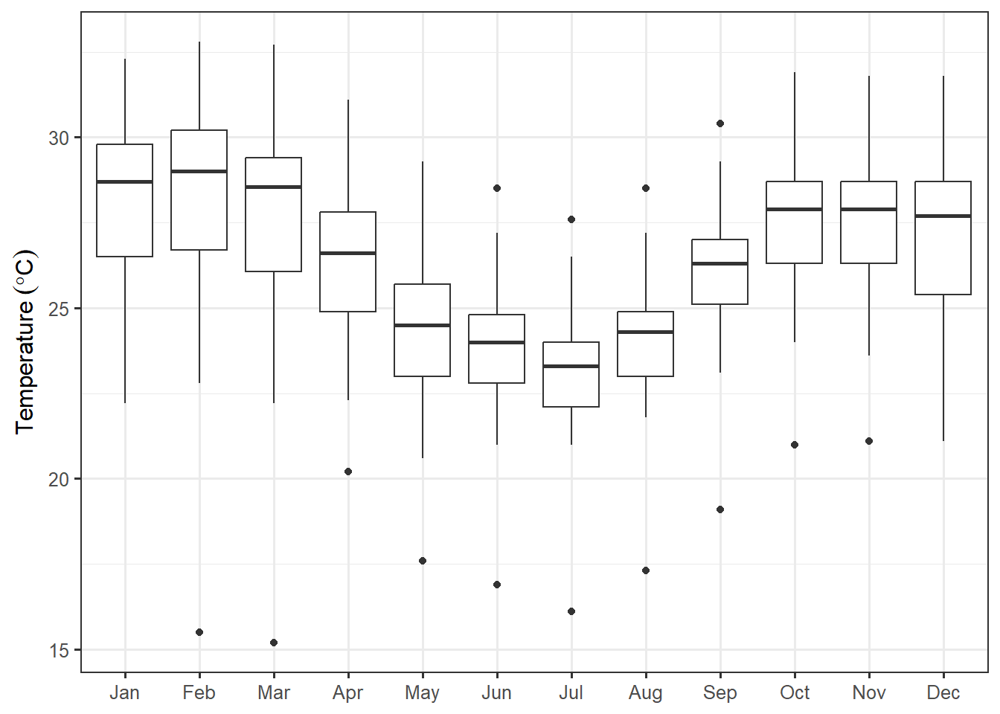
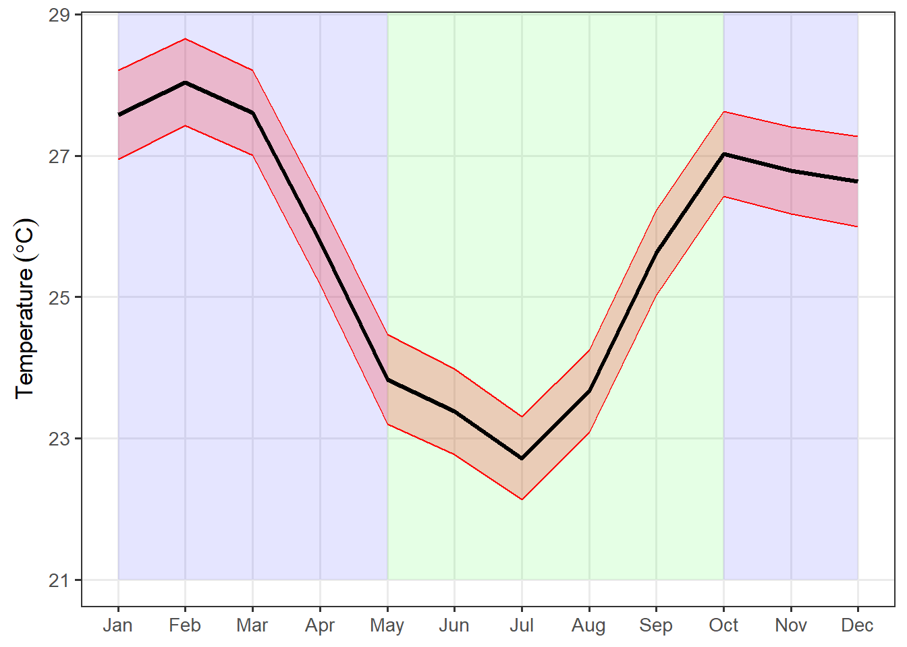
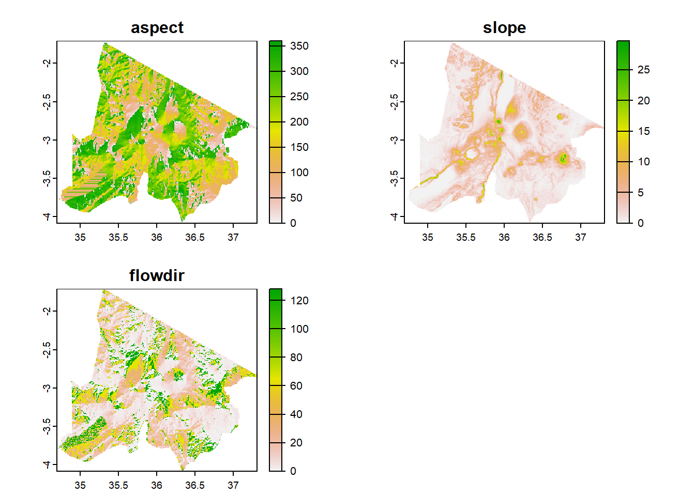

- 1
- load sf package
- 2
- load tidyverse package
- 3
- load terra and; then
- 4
- load gt
Remote Sensing and GIS
Handling Vector and Raster Data in R
Introduction
This exercise provides an introductory overview of spatial data , but it only scratches the surface of this vast field. For a more comprehensive understanding and in-depth analysis of spatial data, it is recommended to refer to specialized reference books like Geospatial Technology and Spatial Analysis in R written by Masumbuko Semba . This book delves into the intricacies of spatial data analysis, offering valuable insights and practical guidance. To access further details and explore the topic extensively, you can visit the following link: https://lugoga.github.io/spatialgoR/ch1.html. It serves as a valuable resource for expanding your knowledge and expertise in spatial data analysis.
In addition to a book on spatial data analysis in R, Semba has also written a book that focuses on handling spatial data in coastal and marine environmental contexts. Although the book has a specific focus, the concepts and methodologies discussed can be applied to other fields such as hydrology and related disciplines. The book offers valuable insights into effectively working with spatial data in coastal and marine environments. To access the book and explore its content, you can visit the following URL: https://lugoga.github.io/geomarine/intro.html. This resource serves as a useful reference for those interested in understanding and analyzing spatial data in the context of coastal and marine environments, while also offering potential applications in related fields.
Furthermore, Semba maintains blogs and websites where he shares informative blog posts discussing solutions for handling, manipulating, visualizing, analyzing, and modeling both spatial and non-spatial data using R and Python programming languages. These resources also touch upon sharing information through web technologies and the development of data-driven and interactive web applications to support decision-making processes. Some of these blogs include “Ngara” (https://lugoga.github.io/semba-quarto/) and “Semba-Blog” (https://semba-blog.netlify.app/post/). Additionally, Semba has developed a web application that can be accessed at the following link: https://semba.shinyapps.io/vizingaApp/. These resources serve as valuable references for those interested in exploring data-related techniques and tools in the context of spatial and non-spatial data analysis, as well as web development for decision support applications.
In this exercise, we will be using different types of spatial data to analyze the Arusha region in Tanzania. The point data represents randomly selected sampling points, the line shape represents rivers, and the polygon represents regions in Tanzania. Additionally, we will be using a raster dataset of elevation in Tanzania. The data will be used for spatial analysis, which employs various techniques to analyze spatial data. This exercise will allow us to gain insights into the geography, hydrology, and other aspects of the Arusha region.
This exercise gives the basics on installing R and RStudio, CRAN spatial Task Views and. Obviously, if you're already familiar with these topics then no need to go through that post.
Our focus will be on importing spatial data (vector and raster) into R and and explore them to understand thow the spatial data are handled and presented in this language. We will use different library such as sf, terra, tidyverse etc along with a few others to achieve our objectives.
Our example will cover a range of topics, including installing R, Rstudio and packages, setting our working directory, importing data, plotting, visualizing spatial data, cropping, masking and derive derivatives of elevation dataset for Arusha region.
By the end of this session, you will have a solid understanding of how to work with vector and raster data in R and be able to apply these techniques to your own projects. So, let’s dive in and get started!
File and folder management
Project files and folders can get unwieldy fast, and can really bog you down and inhibit productivity when you don’t know where your files are or what the latest version is. The two main considerations for addressing this issue are
- defining a simple, common, intuitive folder structure, and
- using informative file names.
Your naming conventions should be:
- machine readable
- i.e. avoid spaces and funny punctuation
- support searching and splitting of names (e.g. “data_raw_precip.csv”, “data_clean_precip.csv”, “data_raw_species.csv” can all be searched by keywords and can be split by “_” into 3 useful fields: type (data vs ot”er), class (raw vs clean), variable (precip vs species), etc)
- human readable
- the contents should be self evident from the file name
- support sorting
- i.e. use numeric or character prefixes to separate files into different components or steps (e.g. “data_raw_localities.csv”, “data_clean_localities.csv”, etc)
- some of this can be handled with folder structure, but you don’t want too many folders either
Find out more about file naming here.
Coding and code management
Why write code?
Working in point-and-click GUI-based software like Excel, Statistica, SPSS, etc may seem easier, but you’ll regret it in the long run…
The beauty of writing code lies in:
- Automation
- You will inevitably have to adjust and repeat your analysis as you get feedback from supervisors, collaborators and reviewers. Rerunning code is one click, and you’re unlikely to introduce errors. Rerunning analyses in GUI-based software is lots of clicks and it’s easy to make mistakes, alter default settings, etc etc.
- Next time you need to do the same analysis on a different dataset you can just copy, paste and tweak your code.
- You code/script provides a record of your analysis
- Linked to the above, mature scientific coding languages like Python or R allow you to run almost any kind of analysis in one scripted workflow, even if it has diverse components like GIS, phylogenetics, multivariate or Bayesian statistics, etc.
- Most proprietary software are limited to one or a few specialized areas (e.g. ArcGIS, etc), which leaves you manually exporting and importing data between multiple software packages. This is very cumbersome, in addition to being a file-management nightmare…
- Most scripting environments are open source (e.g. R, Python, JavaScript, etc)
- Anyone wanting to use your code doesn’t have to pay for a software license
- It’s great for transparency - Lots of people can and have checked the background code and functions you’re using, versus only the software owner’s employees have access to the raw code for most analytical software
- There’s usually a culture of sharing code (online forums, with publications, etc)
Here’s a motivation and some tutorials to help you learn R.
Some coding rules
It’s easy to write messy code. This can make it virtually indecipherable to others (and even yourself), slowing you and your collaborations down. It also makes it easy to make mistakes and not notice them. The overarching rule is to write code for people, not computers. Check out the Tidyverse style guide for R-specific guidance, but here are some basic rules:
- use consistent, meaningful and distinct names for variables and functions
- use consistent code and formatting style
- use commenting to document and explain what you’re doing at each step or in each function - purpose, inputs and outputs
- “notebooks” like RMarkdown or Jupyter Notebooks are very handy for fulfilling roles like documentation, master/makefiles etc and can be developed into reports or manuscripts
- write functions rather than repeating the same code
- modularize code into manageable steps/chunks
- or even separate them into separate scripts that can all be called in order from a master script or Makefile
- check for mistakes at every step!!! Beyond errors or warnings, do the outputs make sense?
- start with a “recipe” that outlines the steps/modules (usually as commented headers etc). This is very valuable for keeping you organized and on track, e.g. a common recipe in R:
- Header indicating purpose, author, date, version etc
- Define settings
- Load required libraries
- Read in data
- Wrangle/reformat/clean/summarize data as required
- Run analyses (often multiple steps)
- Wrangle/reformat/summarize analysis outputs for visualization
- Visualize outputs as figures or tables
- avoid proprietary formats
- i.e. use an open source scripting langauge and open source file formats only
- use version control!!!
Computing environment and software
You’ve heard why you should use open source software whenever possible, but it bears repeating. Using proprietary software means that others have to purchase software, licenses, etc to build on your work and essentially makes it not reproducible by putting it behind a pay-wall. This is self-defeating…
Another issue is that software and hardware change with upgrades, new versions or changes in the preferences within user communities (e.g. you’ll all know MicroSoft Excel, but have you heard of Quattro Pro or Lotus that were the preferred spreadsheet software of yesteryear?).
Just sharing your code, data and workflow does not make your work reproducible if we don’t know what language the code is written in or if functions change or are deprecated in newer versions, breaking your code.
The simplest way to avert this problem is to carefully document the hardware and versions of software used in your analyses so that others can recreate that computing environment if needed. This is very easy in R, because you can simply run the sessionInfo() function, like so:
Software installation and setup
For this exercise, we’ll be using the R statistical programming language (R Core Team 2023). We’ll also be using an integrated development environment (IDE) for each: RStudio.
Important
If you already have these installed and set up, please make sure you have the latest versions, and check that your installations are working! Please also make sure you have installed (and/or updated) the Tidyverse set of R packages. It can be installed using the code install.packages("tidyverse") and updated using update.packages("tidyverse")
The installation and setup can be a bit long-winded, but once done you should be good to go until you change or reformat your computer. The steps below are my summary and (hopefully) more intuitive adaptation of the instructions provided for installing and run R and Rstudio in your machine.
First we’ll start with the necessary software.
- Download and install the latest version of R
- Download and install the latest free version of RStudio Desktop
- Lastly, you need to install the packages we will need for this session. To begin with, we are going to install few packages, which include tidyverse (Wickham et al. 2019), terra (Hijmans 2023), sf (Pebesma 2018), and tidyterra (Hernangómez 2023) packages. This can be done using the code:
A quick note on the structure of this tutorial
From here this tutorial will include embedded chunks of R code and the output that R returns in little grey boxes. The R code I call starts at the beginning of the line, while each line of R's output starts with "##", e.g.
1+1## [1] 2Note that I occassionally include additional comments in the R chunks as one often does in normal R code. Comments are preceded by "#", e.g.
1+1 #My comment## [1] 2Hopefully this will all make sense as you get into the tutorial…
Handling Spatial Data in R
This tutorial will guide you through the process of importing and handling spatial data in R. We will cover how to import point, lines, polygon, and raster data using the sf and terra packages.
spatial data refers to data that has a geographic component, such as point locations, lines, polygons, and raster images. R is a powerful tool for handling and analyzing spatial data, with several packages available for importing, manipulating, and visualizing spatial data. In this tutorial, we will cover the basics of handling spatial data in R, starting with importing point, line, polygon, and raster data.
Introduction Spatial Data
Spatial phenomena can generally be thought of as either discrete objects with clear boundaries or as a continuous phenomena that can be observed everywhere (Semba and Peter 2023), but that do not have natural boundaries. Discrete spatial objects may refer to a river, road, country, town, or a research site. Examples of continuous phenomena, or “spatial fields”, include elevation, temperature, and air quality.
Spatial objects are usually represented by vector data (Semba, Peter, and Andrew). Such data consists of a description of the “geometry” or “shape” of the objects (Semba), and normally also includes additional variables. For example, a vector data set may represent the borders of the countries of the world (geometry), and also store their names and the size of their population in 2015; or it may have the geometry of the roads in an area, as well as their type and names. These additional variables are often referred to as “attributes”. Continuous spatial data (fields) are usually represented with a raster data structure. We discuss these two data types in turn.
Vector data
The main vector data types are points, lines and polygons (Pebesma 2018; Semba, Peter, and Andrew). In all cases, the geometry of these data structures consists of sets of coordinate pairs (x, y). Points are the simplest case. Each point has one coordinate pair, and n associated variables. For example, a point might represent a place where a rat was trapped, and the attributes could include the date it was captured, the person who captured it, the species size and sex, and information about the habitat. It is also possible to combine several points into a multi-point structure, with a single attribute record. For example, all the coffee shops in a town could be considered as a single geometry.
The geometry of lines is a just a little bit more complex. First note that in this context, the term ‘line’ refers to a set of one or more polylines (connected series of line segments). For example, in spatial analysis, a river and all its tributaries could be considered as a single ‘line’ (but they could also also be several lines, perhaps one for each tributary river). Lines are represented as ordered sets of coordinates (nodes). The actual line segments can be computed (and drawn on a map) by connecting the points. Thus, the representation of a line is very similar to that of a multi-point structure. The main difference is that for a line the ordering of the points is important, because we need to know in which order the points should be connected.
A network (e.g. a road or river network), or spatial graph, is a special type of lines geometry where there is additional information about things like flow, connectivity, direction, and distance.
A polygon refers to a set of closed polylines. The geometry is very similar to that of lines, but to close a polygon the last coordinate pair coincides with the first pair. A complication with polygons is that they can have holes (that is a polygon entirely enclosed by another polygon, that serves to remove parts of the enclosing polygon (for example to show an island inside a lake. Also, valid polygons do not self-intersect (but it is OK for a line to self-cross). Again, multiple polygons can be considered as a single geometry. For example, Indonesia consists of many islands. Each island can be represented by a single polygon, but together then can be represent a single (multi-) polygon representing the entire country.
Raster data
raster data is commonly used to represent spatially continuous phenomena such as elevation (Hijmans 2023). A raster divides the world into a grid of equally sized rectangles (referred to as cells or, in the context of satellite remote sensing, pixels) that all have one or more values (or missing values) for the variables of interest (Semba, Peter, and Andrew). A raster cell value should normally represent the average (or majority) value for the area it covers. However, in some cases the values are actually estimates for the center of the cell (in essence becoming a regular set of points with an attribute).
In contrast to vector data, in raster data the geometry is not explicitly stored as coordinates. It is implicitly set by knowing the spatial extent and the number or rows and columns in which the area is divided (Hernangómez 2023). From the extent and number of rows and columns, the size of the raster cells (spatial resolution) can be computed. While raster cells can be thought of as a set of regular polygons, it would be very inefficient to represent the data that way as coordinates for each cell would have to be stored explicitly. Doing so would also dramatically increase processing time.
loading packages
First, make sure you have the necessary packages installed and loaded on your machine. The packages we will be using are sf, tidyverse, and terra. You can install and load these packages using the following code in Rstudio:
Then load them in our session using library function;
Loading spatial Data
Point Data
To import point data in R, we can use the sf package. This package provides a simple and efficient way to work with spatial data in R. To import point data from a shapefile, we can use the st_read() function. Here is an example code:
- 1
- specify the function
- 2
- define the path and file
- 3
- prevent the document printing in console
Let’s us explore what is contained in the sampling points. It’s important to remember that vector data model should have a spatial dimension and an attribute information that describe the information of each feature
Simple feature collection with 30 features and 1 field
Geometry type: POINT
Dimension: XY
Bounding box: xmin: 35.08742 ymin: -3.915823 xmax: 36.95439 ymax: -1.800931
Geodetic CRS: WGS 84
First 10 features:
name geom
1 station_1 POINT (36.853 -3.4023)
2 station_2 POINT (36.6334 -3.017127)
3 station_3 POINT (35.47925 -2.4742)
4 station_4 POINT (35.12118 -3.674647)
5 station_5 POINT (36.7901 -2.687773)
6 station_6 POINT (36.95439 -2.939174)
7 station_7 POINT (36.34118 -2.651372)
8 station_8 POINT (36.38371 -3.915823)
9 station_9 POINT (35.60775 -2.240748)
10 station_10 POINT (35.46656 -1.909838)Line Data
To import line data in R, we can use the same st_read() function as for point data. Here is an example code:
Simple feature collection with 199 features and 2 fields
Geometry type: MULTILINESTRING
Dimension: XY
Bounding box: xmin: 29.7495 ymin: -11.67632 xmax: 40.4299 ymax: -0.9867556
Geodetic CRS: WGS 84
First 10 features:
Id River_Name geom
1 0 Mara MULTILINESTRING ((33.93129 ...
2 0 Mara MULTILINESTRING ((34.01076 ...
3 0 Gurumeti MULTILINESTRING ((33.80141 ...
4 0 Orangi MULTILINESTRING ((34.48343 ...
5 0 Nyabogati MULTILINESTRING ((35.15211 ...
6 0 Mhalageti MULTILINESTRING ((33.82517 ...
7 0 Duma MULTILINESTRING ((33.43835 ...
8 0 Duma MULTILINESTRING ((33.80104 ...
9 0 Simiyu MULTILINESTRING ((33.40786 ...
10 0 Lolgorien MULTILINESTRING ((35.9242 -...Polygon Data
To import polygon data in R, we can use the same st_read() function as for point and line data. Here is an example code:
Simple feature collection with 32 features and 8 fields
Geometry type: MULTIPOLYGON
Dimension: XY
Bounding box: xmin: 29.29227 ymin: -11.76044 xmax: 40.45468 ymax: -0.9989721
Geodetic CRS: WGS 84
First 10 features:
FID_TZ_REG ID TZ_REGIONA FID_TZREGI ID_1 AREA CCRO CRO
1 2 0 NJOMBE -1 0 0 0 0
2 3 0 LINDI -1 0 0 0 0
3 4 0 IRINGA -1 0 0 0 0
4 6 0 RUKWA -1 0 0 0 0
5 10 0 KATAVI -1 0 0 0 0
6 11 0 DODOMA -1 0 0 0 0
7 12 0 TANGA -1 0 0 0 0
8 13 0 TABORA -1 0 0 0 0
9 14 0 SINGIDA -1 0 0 0 0
10 15 0 MANYARA -1 0 0 0 0
geom
1 MULTIPOLYGON (((34.7738 -8....
2 MULTIPOLYGON (((39.25599 -8...
3 MULTIPOLYGON (((34.93377 -6...
4 MULTIPOLYGON (((30.9412 -7....
5 MULTIPOLYGON (((31.11722 -5...
6 MULTIPOLYGON (((37.04439 -5...
7 MULTIPOLYGON (((38.79985 -5...
8 MULTIPOLYGON (((33.6004 -3....
9 MULTIPOLYGON (((34.78736 -3...
10 MULTIPOLYGON (((35.83085 -3...Example 1 Which function within the sf package should be used to import vector data modal in R?
Solution. To read simple feature spatial data into R, you can use the st_read() function from the sf package. This function can read spatial data from various file formats, including shapefiles, geopackages, GeoJSON, and KML files.
Raster Data
To import raster data in R, we can use the terra package. This package provides a fast and efficient way to work with raster data in R. To import a raster image from a file, we can use the rast() function. Here is an example code:
class : SpatRaster
dimensions : 1380, 1380, 1 (nrow, ncol, nlyr)
resolution : 0.008333333, 0.008333333 (x, y)
extent : 29, 40.5, -12, -0.5 (xmin, xmax, ymin, ymax)
coord. ref. : lon/lat WGS 84 (EPSG:4326)
source : TZA_wc2.1_30s_elev.tif
name : TZA_wc2.1_30s_elev
min value : -1
max value : 5778 Example 2 Which function in terra package is used to read and import raster data modal in R?
Solution. The rast() function in the terra package is used to read raster datasets into R. It allows for the efficient loading and manipulation of raster data, providing access to various operations and analysis on the raster objects.
Visualizing Spatial Data
Plotting vector Data Types
Once we have imported our spatial data into R, we can manipulate it using various functions provided by the sf and terra packages. For example, we can plot our spatial data using the plot() function. Here is an example code:
Simple feature collection with 30 features and 1 field
Geometry type: POINT
Dimension: XY
Bounding box: xmin: 35.08742 ymin: -3.915823 xmax: 36.95439 ymax: -1.800931
Geodetic CRS: WGS 84
First 10 features:
name geom
1 station_1 POINT (36.853 -3.4023)
2 station_2 POINT (36.6334 -3.017127)
3 station_3 POINT (35.47925 -2.4742)
4 station_4 POINT (35.12118 -3.674647)
5 station_5 POINT (36.7901 -2.687773)
6 station_6 POINT (36.95439 -2.939174)
7 station_7 POINT (36.34118 -2.651372)
8 station_8 POINT (36.38371 -3.915823)
9 station_9 POINT (35.60775 -2.240748)
10 station_10 POINT (35.46656 -1.909838)The printed sampling station provide a metadata that describe the given data is a simple feature collection with 30 features and 1 field. The geometry type is a point, and the dimension is XY. The bounding box is defined by the minimum and maximum values of the x and y coordinates. The geodetic CRS is WGS 84. The data contains 30 points, each representing a station, with the name of the station and its corresponding latitude and longitude coordinates. The data can be plotted using plot function in R, the code in the chunk highlight;
The plot function has plotted the sampling station by station name. Its not very clear here as the spatial information in the plot is missing. Though a plot function is useful for visualizing spatial data in R, but Plotting spatial data with ggplot2 is more intuitive and is the one I prefer. This is because it use a concept of grammer of graphics (gg) and its code syntax are easy to read and follow. To plot any data in ggplot2 (Wickham 2016), the key steps include
- Use the
ggplot()function to initiate the plot and specify the data source. - Add the desired layers to the plot using
geom_sf()for spatial data. ggplot2 offers severalgeoms_for non-spatial data. - Customize the plot using ggplot2 functions such as
labs(),scale_(), andtheme_().
Code

Similarly, we can plot line and polygon data using the same plot() function. Let’s load our river dataset into the session using st_read() function and specify the directory path where our river dataset is stored;
Simple feature collection with 199 features and 2 fields
Geometry type: MULTILINESTRING
Dimension: XY
Bounding box: xmin: 29.7495 ymin: -11.67632 xmax: 40.4299 ymax: -0.9867556
Geodetic CRS: WGS 84
First 10 features:
Id River_Name geom
1 0 Mara MULTILINESTRING ((33.93129 ...
2 0 Mara MULTILINESTRING ((34.01076 ...
3 0 Gurumeti MULTILINESTRING ((33.80141 ...
4 0 Orangi MULTILINESTRING ((34.48343 ...
5 0 Nyabogati MULTILINESTRING ((35.15211 ...
6 0 Mhalageti MULTILINESTRING ((33.82517 ...
7 0 Duma MULTILINESTRING ((33.43835 ...
8 0 Duma MULTILINESTRING ((33.80104 ...
9 0 Simiyu MULTILINESTRING ((33.40786 ...
10 0 Lolgorien MULTILINESTRING ((35.9242 -...Upon observation, it becomes apparent that the river dataset contains not only geometrical information, but also two additional columns for attribute data, namely ID and River_Name. Prior to visualizing the distribution of rivers across the country using ggplot2, it is imperative to ensure that the metadata of the imported dataset informs us on the spatial dimension.
We can also visualize the polgyon, for this case, i chopped the boundary of the Arusha region for illustration purpose. Let’s load the shapefile into our session using st_read function from sf package;
To visualize the polygon data, the boundary of the Arusha region was chopped for illustration purposes. This will allow us to better understand the shape of the polygon and its various components. The dataset can be loaded into the R session using the st_read() function from the sf package. plot
Simple feature collection with 1 feature and 1 field
Geometry type: MULTIPOLYGON
Dimension: XY
Bounding box: xmin: 34.70163 ymin: -4.083069 xmax: 37.31218 ymax: -1.708256
Geodetic CRS: WGS 84
region geom
1 ARUSHA MULTIPOLYGON (((37.31218 -2...The printed arusha dataset is a simple feature collection that comprises one feature and one field. The geometry type is multipolygon, with dimensions represented in XY format. The bounding box specifies the minimum and maximum values for the x and y coordinates, with xmin: 34.70163, ymin: -4.083069, xmax: 37.31218, and ymax: -1.708256 with a geodetic coordinate reference system (CRS) as WGS 84. The feature within this collection represents the region of Arusha, with its corresponding multipolygon geometry.
That information is key in understanding the spatial component in the dataset, and we can now proceed and plot this dataset with ggplot2 package.
Plotting Raster Data
We can easily plot raster with plot function from terra package (Hijmans 2023). We only need first to import our raster dataset from our working directory into R. As shown previous, that can be done using a rast() function also from terra, which read any type of raster dataset in R. Let’s import an elevation dataset using the chunk code belowp
class : SpatRaster
dimensions : 285, 313, 1 (nrow, ncol, nlyr)
resolution : 0.008333333, 0.008333333 (x, y)
extent : 34.7, 37.30833, -4.083333, -1.708333 (xmin, xmax, ymin, ymax)
coord. ref. : lon/lat WGS 84 (EPSG:4326)
source : elevation_arusha.tif
name : TZA_wc2.1_30s_elev
min value : 595
max value : 4222 [1] 0.9166666The printed elevation dataset provides a comprehensive description of the SpatRaster class and its properties. The dataset indicates that is The SpatRaster class is a representation of a raster dataset with the following dimensions: 285 rows, 313 columns, and 1 layer. The spatial resolution of the dataset is 0.008333333 (~0.91km) in both x and y directions. The elevation of arusha presented in this dataset range from 595 to 4222 meters. Let’s plot the dataset
There are several ways to plot raster data in R, but ggplot2 does not support raster data natively. But Diego Hernangómez -Hernangómez (2023) developed tidyverse package with function that support spatRaster in ggplot2. The code in the chunk below generates Figure 6.
Manipulating Spatial Data
To manipulate raster data, we can use functions such as crop(), resample(), and mask(). For example, to crop an elevation dataset of Tanzania to only cover the Arusha region, we can use the crop() function. Here is an example code:
Cropping raster
Cropping a raster in R involves removing or extracting a subset of a raster based on a specified extent or boundary. The terra package (Hijmans 2023) in R provides a crop() function that can be used to crop a SpatRaster based on an extent object;
class : SpatRaster
dimensions : 285, 313, 1 (nrow, ncol, nlyr)
resolution : 0.008333333, 0.008333333 (x, y)
extent : 34.7, 37.30833, -4.083333, -1.708333 (xmin, xmax, ymin, ymax)
coord. ref. : lon/lat WGS 84 (EPSG:4326)
source(s) : memory
name : TZA_wc2.1_30s_elev
min value : 595
max value : 4345 After cropping an elevation raster of the geographical extent of Tanzania to the Arusha region, the next step is to visualize the chopped elevation data. We can visualize it using ggplot2 (Wickham 2016) and tidyterra (Hernangómez 2023)
Masking raster
Masking a raster is a process of removing or replacing values in a raster based on a mask layer. A mask layer can be a raster or a polygon layer. The terra package (Hijmans 2023) in R provides a mask() function that can be used to mask values in a raster object based on values in another raster or polygon layer;
Code
class : SpatRaster
dimensions : 285, 313, 1 (nrow, ncol, nlyr)
resolution : 0.008333333, 0.008333333 (x, y)
extent : 34.7, 37.30833, -4.083333, -1.708333 (xmin, xmax, ymin, ymax)
coord. ref. : lon/lat WGS 84 (EPSG:4326)
source(s) : memory
name : TZA_wc2.1_30s_elev
min value : 595
max value : 4222 After masking an elevation raster of the geographical extent of Tanzania to the Arusha region, we can also visualize the masked elevation data using ggplot2 (Wickham 2016) and tidyterra (Hernangómez 2023)
Extracting elevation values
The ability to extract values from a raster dataset at specific locations is a critical component of spatial analysis, modeling, and decision-making processes. Researchers and analysts can gain valuable insights into patterns, trends, and relationships within the dataset by obtaining values at specific locations. This information can be used to conduct point-based sampling for validation or modeling purposes, input for predictive models, and informed decision-making. By using this process, researchers and analysts can make informed decisions that are based on reliable data, leading to better outcomes and a more comprehensive understanding of the underlying data.
Extracting from single raster to sampling points
Let’s imagine we dataset representing the elevation of a Arusha region shown in Figure 8. This is in the form of a raster, where each pixel represents a small area on the map and has an associated elevation value. Now, we want to extract the elevation values of thirty specific locations (red sampling points) shown in Figure 8 from this dataset.
Code
ggplot() +
ggspatial::annotation_map_tile(type = "osm", zoom = 8)+
tidyterra::geom_spatraster(data = arusha.elevation.mask)+
geom_sf(data = sampling.points, size = 3, color = "red")+
ggspatial::annotation_north_arrow(location = "tr")+
ggspatial::annotation_scale(location = "bl")+
scale_fill_gradientn(
colours = hcl.colors(
n = 20, palette = "Spectral") %>% rev(), na.value = NA,
guide = guide_colorbar(title = "Altitude (m)",
title.position = "top",
direction = "horizontal",
barheight = .6 )
)+
theme_bw()+
theme(
legend.position = c(.840,.08),
legend.background = element_blank(),
panel.background = element_rect(fill = NA, colour = "black"))
First, we load the terra package (Hijmans 2023) along with sf (Pebesma 2018) and tidyverse (Wickham et al. 2019), which provides functions for working with raster data and vector data.
Then, we read the raster dataset into R using the rast function.
class : SpatRaster
dimensions : 285, 313, 1 (nrow, ncol, nlyr)
resolution : 0.008333333, 0.008333333 (x, y)
extent : 34.7, 37.30833, -4.083333, -1.708333 (xmin, xmax, ymin, ymax)
coord. ref. : lon/lat WGS 84 (EPSG:4326)
source : elevation_arusha.tif
name : TZA_wc2.1_30s_elev
min value : 595
max value : 4222 Next, we import the sampling points, which are simple feature of the thirty locations we are interested in.
Simple feature collection with 30 features and 1 field
Geometry type: POINT
Dimension: XY
Bounding box: xmin: 35.08742 ymin: -3.915823 xmax: 36.95439 ymax: -1.800931
Geodetic CRS: WGS 84
First 10 features:
name geom
1 station_1 POINT (36.853 -3.4023)
2 station_2 POINT (36.6334 -3.017127)
3 station_3 POINT (35.47925 -2.4742)
4 station_4 POINT (35.12118 -3.674647)
5 station_5 POINT (36.7901 -2.687773)
6 station_6 POINT (36.95439 -2.939174)
7 station_7 POINT (36.34118 -2.651372)
8 station_8 POINT (36.38371 -3.915823)
9 station_9 POINT (35.60775 -2.240748)
10 station_10 POINT (35.46656 -1.909838)With the sampling points loaded, we use the extract function from the terra package to extract the elevation values at those specific points from the raster dataset. This function retrieves the elevation values corresponding to the locations we specified.
Code
atitude_m
1 1102
2 1407
3 1844
4 1027
5 1354
6 1200
7 1175
8 1581
9 1836
10 2133
11 1249
12 1672
13 1765
14 1215
15 1489
16 1027
17 1027
18 1016
19 3358
20 1170
21 2032
22 1262
23 603
24 1150
25 1363
26 2162
27 1137
28 1056
29 1722
30 1459We can then combine the sampling points simple feature with the extracted ones;
Simple feature collection with 30 features and 2 fields
Geometry type: POINT
Dimension: XY
Bounding box: xmin: 35.08742 ymin: -3.915823 xmax: 36.95439 ymax: -1.800931
Geodetic CRS: WGS 84
First 10 features:
name atitude_m geom
1 station_1 1102 POINT (36.853 -3.4023)
2 station_2 1407 POINT (36.6334 -3.017127)
3 station_3 1844 POINT (35.47925 -2.4742)
4 station_4 1027 POINT (35.12118 -3.674647)
5 station_5 1354 POINT (36.7901 -2.687773)
6 station_6 1200 POINT (36.95439 -2.939174)
7 station_7 1175 POINT (36.34118 -2.651372)
8 station_8 1581 POINT (36.38371 -3.915823)
9 station_9 1836 POINT (35.60775 -2.240748)
10 station_10 2133 POINT (35.46656 -1.909838)Extracting from single raster to polygon
This extract() function from terra packages is not limited to extracts the values of a raster at the locations of spatial point, but it may be used to extract values of raster from spatial vector data of lines, and polygons. Let’s see how to extract the elevation values for each ward in the Arusha region. Let’s import the ward dataset from our working directory
Simple feature collection with 155 features and 8 fields
Geometry type: MULTIPOLYGON
Dimension: XY
Bounding box: xmin: 34.74975 ymin: -4.150178 xmax: 37.4302 ymax: -1.689487
Geodetic CRS: WGS 84
First 10 features:
Region_Nam District_N Ward_Code Ward_Name Ward_ID Council_Na Division
1 Arusha Arusha Rural 011 Oldonyosambu 100068 Arusha DC Mukulat
2 Arusha Arusha Rural 011 Oldonyowas 100069 Arusha DC Mukulat
3 Arusha Arusha Rural 021 Lemanyata 100067 Arusha DC Mukulat
4 Arusha Arusha Rural 031 Ilkiding'a 100077 Arusha DC Enaboishu
5 Arusha Arusha Rural 041 Bangata 100079 Arusha DC Moshono
6 Arusha Arusha Rural 053 Kiutu 100081 Arusha DC Moshono
7 Arusha Arusha Rural 053 Sokon II 100080 Arusha DC Moshono
8 Arusha Arusha Rural 061 Olturoto 100078 Arusha DC Enaboishu
9 Arusha Arusha Rural 073 Ilboru 100091 Arusha DC Enaboishu
10 Arusha Arusha Rural 073 Moivo 100089 Arusha DC Enaboishu
Population geom
1 16484 MULTIPOLYGON (((36.68804 -3...
2 16484 MULTIPOLYGON (((36.742 -3.0...
3 0 MULTIPOLYGON (((36.64091 -3...
4 10850 MULTIPOLYGON (((36.73854 -3...
5 9136 MULTIPOLYGON (((36.75432 -3...
6 32073 MULTIPOLYGON (((36.72413 -3...
7 32073 MULTIPOLYGON (((36.7456 -3....
8 15451 MULTIPOLYGON (((36.71474 -3...
9 27151 MULTIPOLYGON (((36.68481 -3...
10 27151 MULTIPOLYGON (((36.69487 -3...The printed output indicates that the dataset has 155 features representing wards in the Arusha. Unlike extracting raster to point feature, for polygone, we need to parse more argument to tell the function that it has to calculate the mean of all the cells within its polygon;
Then we bind the ward elevation into simple feature
Simple feature collection with 155 features and 9 fields
Geometry type: MULTIPOLYGON
Dimension: XY
Bounding box: xmin: 34.74975 ymin: -4.150178 xmax: 37.4302 ymax: -1.689487
Geodetic CRS: WGS 84
First 10 features:
Region_Nam District_N Ward_Code Ward_Name Ward_ID Council_Na Division
1 Arusha Arusha Rural 011 Oldonyosambu 100068 Arusha DC Mukulat
2 Arusha Arusha Rural 011 Oldonyowas 100069 Arusha DC Mukulat
3 Arusha Arusha Rural 021 Lemanyata 100067 Arusha DC Mukulat
4 Arusha Arusha Rural 031 Ilkiding'a 100077 Arusha DC Enaboishu
5 Arusha Arusha Rural 041 Bangata 100079 Arusha DC Moshono
6 Arusha Arusha Rural 053 Kiutu 100081 Arusha DC Moshono
7 Arusha Arusha Rural 053 Sokon II 100080 Arusha DC Moshono
8 Arusha Arusha Rural 061 Olturoto 100078 Arusha DC Enaboishu
9 Arusha Arusha Rural 073 Ilboru 100091 Arusha DC Enaboishu
10 Arusha Arusha Rural 073 Moivo 100089 Arusha DC Enaboishu
Population elevation_m geom
1 16484 1814.672 MULTIPOLYGON (((36.68804 -3...
2 16484 1600.916 MULTIPOLYGON (((36.742 -3.0...
3 0 1829.227 MULTIPOLYGON (((36.64091 -3...
4 10850 2805.412 MULTIPOLYGON (((36.73854 -3...
5 9136 1823.938 MULTIPOLYGON (((36.75432 -3...
6 32073 1636.500 MULTIPOLYGON (((36.72413 -3...
7 32073 1628.917 MULTIPOLYGON (((36.7456 -3....
8 15451 1647.100 MULTIPOLYGON (((36.71474 -3...
9 27151 1457.000 MULTIPOLYGON (((36.68481 -3...
10 27151 1482.750 MULTIPOLYGON (((36.69487 -3...And map the spatial distribution of the elevation across the region
Extracting from multiple raster to sampling points
Temperature
class : SpatRaster
dimensions : 1380, 1380, 12 (nrow, ncol, nlyr)
resolution : 0.008333333, 0.008333333 (x, y)
extent : 29, 40.5, -12, -0.5 (xmin, xmax, ymin, ymax)
coord. ref. : lon/lat WGS 84 (EPSG:4326)
source : TZA_wc2.1_30s_tmax.tif
names : TZA_w~max_1, TZA_w~max_2, TZA_w~max_3, TZA_w~max_4, TZA_w~max_5, TZA_w~max_6, ...
min values : 2.9, 4.1, 3.7, 2.1, 1.0, 1.4, ...
max values : 34.8, 36.0, 36.2, 34.7, 33.5, 33.5, ... The displayed raster indicates that the temperature dataset consists of twelve layers, each representing a different month from January to December. The spatial extent covers the entire country with a spatial resolution of approximately 0.0083, equivalent to around 900 meters. However, the names assigned to the months are disorganized and challenging to interpret.
To address this, it is necessary to enhance the dataset by assigning appropriate names to each month and performing cropping (describe in Section 3.5.1) and masking (describe in Section 3.5.2) operations to limit the temperature raster to the boundaries of the Arusha region. The chunk below highlight the procedure for renaming months, crop and mask the temperature layer.
Code
class : SpatRaster
dimensions : 285, 313, 12 (nrow, ncol, nlyr)
resolution : 0.008333333, 0.008333333 (x, y)
extent : 34.7, 37.30833, -4.083333, -1.708333 (xmin, xmax, ymin, ymax)
coord. ref. : lon/lat WGS 84 (EPSG:4326)
source(s) : memory
names : Jan, Feb, Mar, Apr, May, Jun, ...
min values : 10, 10.9, 10.5, 8.6, 6.8, 6.5, ...
max values : 34, 34.4, 34.0, 32.7, 31.2, 30.2, ... The cleaned temperature raster consists of twelve layers, but with more describtive layer name, each representing a different month from January to December. Unlike the origin, the cleaned raster dataseted now has a spatial extent only cover the Arusha region but retain a spatial resolution of approximately 0.0083, equivalent to around 900 meters. Let’splot this temperature layer using plot function;
We notice that maximum temperature at Arusha vary across the region and we want to extract monthly value to the thirty sampling points
Code
ggplot()+
tidyterra::geom_spatraster(data = temperature)+
geom_sf(data = sampling.points, color = "black") +
facet_wrap(~lyr)+
scale_fill_gradientn(
name = "Tmax",
colours = hcl.colors(n = 20, palette = "Temps"),
na.value = NA,
trans = scales::modulus_trans(p = 4),
breaks = c(20, 25, 29, 31, 33))+
scale_x_continuous(breaks = c(35.5,37))
Though we have a spatraster with twelve layer, we are not going to extract values to the sampling points manual for each month but rather leveraging the capabilities of terra, without the need for complex and time-consuming manual processes.
As outlined in Section 3.5.3, the extract function in Terra (Hijmans 2023) can be utilized to extract raster values from a stacked spatraster object. This technique is highly effective and allows for the extraction of temperature data at a monthly level, which can be further analyzed and utilized for various scientific or research purposes. This approach is particularly useful in scenarios where large datasets need to be processed quickly and accurately.
Code
- 1
- extract temperature with corresponding xy
- 2
- extract value of raster to sampling points
- 3
- change the position of x and y
- 4
- rename x to lon and y to lat
The monthly temperature value for each sampling location with corresponding longitude and latitude are presented in the Table 1;
| LON | LAT | ID | JAN | FEB | MAR | APR | MAY | JUN | JUL | AUG | SEP | OCT | NOV | DEC |
|---|---|---|---|---|---|---|---|---|---|---|---|---|---|---|
| 36.9 | −3.4 | 1 | 29.8 | 30.3 | 29.4 | 26.7 | 24.4 | 23.4 | 22.9 | 23.9 | 26.1 | 27.9 | 28.5 | 29.0 |
| 36.6 | −3.0 | 2 | 29.0 | 29.4 | 28.7 | 26.5 | 24.7 | 24.2 | 23.3 | 24.2 | 26.3 | 27.7 | 27.4 | 27.6 |
| 35.5 | −2.5 | 3 | 24.6 | 25.1 | 24.9 | 23.0 | 21.1 | 21.3 | 21.0 | 22.1 | 23.8 | 24.9 | 24.2 | 23.6 |
| 35.1 | −3.7 | 4 | 30.1 | 30.2 | 29.8 | 28.9 | 26.5 | 25.5 | 24.4 | 25.6 | 27.6 | 29.2 | 29.7 | 29.5 |
| 36.8 | −2.7 | 5 | 28.3 | 29.0 | 28.3 | 26.1 | 24.4 | 23.6 | 22.9 | 23.6 | 25.8 | 27.4 | 27.0 | 27.1 |
| 37.0 | −2.9 | 6 | 29.9 | 30.3 | 29.3 | 27.0 | 25.4 | 24.4 | 23.6 | 24.4 | 26.6 | 28.1 | 28.0 | 28.7 |
| 36.3 | −2.7 | 7 | 29.5 | 30.0 | 29.6 | 27.6 | 26.0 | 25.4 | 24.7 | 25.4 | 27.4 | 28.7 | 28.2 | 28.3 |
| 36.4 | −3.9 | 8 | 26.7 | 27.0 | 26.3 | 24.6 | 22.3 | 22.0 | 21.2 | 22.4 | 24.6 | 26.3 | 26.3 | 26.1 |
| 35.6 | −2.2 | 9 | 24.7 | 25.3 | 25.1 | 23.1 | 21.0 | 21.4 | 21.2 | 22.3 | 23.9 | 24.9 | 24.3 | 23.7 |
| 35.5 | −1.9 | 10 | 23.4 | 24.0 | 24.2 | 22.3 | 20.6 | 21.0 | 21.2 | 21.8 | 23.1 | 24.0 | 23.6 | 22.8 |
| 36.7 | −2.8 | 11 | 29.8 | 30.2 | 29.4 | 27.3 | 25.7 | 24.8 | 24.0 | 24.8 | 27.0 | 28.5 | 28.2 | 28.5 |
| 35.1 | −3.1 | 12 | 26.5 | 27.0 | 26.6 | 25.6 | 23.9 | 24.1 | 23.4 | 24.4 | 26.0 | 27.0 | 26.4 | 25.4 |
| 35.6 | −2.3 | 13 | 25.1 | 25.7 | 25.5 | 23.5 | 21.4 | 21.8 | 21.6 | 22.6 | 24.3 | 25.3 | 24.7 | 24.1 |
| 36.2 | −3.7 | 14 | 28.9 | 29.2 | 28.5 | 26.9 | 24.5 | 24.0 | 23.4 | 24.6 | 27.0 | 28.5 | 28.7 | 28.5 |
| 36.6 | −2.9 | 15 | 27.7 | 28.1 | 27.6 | 25.3 | 23.3 | 22.8 | 22.1 | 23.0 | 25.1 | 26.7 | 26.6 | 26.5 |
| 35.1 | −3.6 | 16 | 28.9 | 28.9 | 28.8 | 27.9 | 25.6 | 24.8 | 23.7 | 24.9 | 27.0 | 28.8 | 29.2 | 28.7 |
| 35.2 | −3.5 | 17 | 28.7 | 28.7 | 28.6 | 27.8 | 25.3 | 24.4 | 23.3 | 24.5 | 26.6 | 28.4 | 29.0 | 28.7 |
| 36.3 | −2.7 | 18 | 31.3 | 31.8 | 31.4 | 29.3 | 27.8 | 27.2 | 26.5 | 27.2 | 29.3 | 30.5 | 30.1 | 30.1 |
| 36.8 | −3.3 | 19 | 14.7 | 15.5 | 15.2 | 13.2 | 11.0 | 10.5 | 9.8 | 10.8 | 12.4 | 14.1 | 13.7 | 13.6 |
| 35.8 | −3.4 | 20 | 28.5 | 29.0 | 28.5 | 27.0 | 24.5 | 24.0 | 23.1 | 24.3 | 26.5 | 27.9 | 27.9 | 27.7 |
| 35.5 | −1.8 | 21 | 24.2 | 24.6 | 24.9 | 23.2 | 21.4 | 21.6 | 21.5 | 22.2 | 23.4 | 24.5 | 24.1 | 23.4 |
| 36.6 | −3.7 | 22 | 29.1 | 29.6 | 28.7 | 26.6 | 24.4 | 23.8 | 23.4 | 24.4 | 26.6 | 28.2 | 28.2 | 28.4 |
| 36.1 | −2.5 | 23 | 32.3 | 32.8 | 32.7 | 31.1 | 29.3 | 28.5 | 27.6 | 28.5 | 30.4 | 31.9 | 31.8 | 31.8 |
| 36.3 | −2.7 | 24 | 29.7 | 30.2 | 29.8 | 27.8 | 26.2 | 25.6 | 24.8 | 25.6 | 27.6 | 28.9 | 28.4 | 28.5 |
| 36.6 | −2.7 | 25 | 28.7 | 29.2 | 28.7 | 26.4 | 24.7 | 23.9 | 23.2 | 24.0 | 26.2 | 27.7 | 27.3 | 27.5 |
| 36.7 | −3.3 | 26 | 22.2 | 22.8 | 22.2 | 20.2 | 17.6 | 16.9 | 16.1 | 17.3 | 19.1 | 21.0 | 21.1 | 21.1 |
| 35.7 | −2.5 | 27 | 30.2 | 30.8 | 30.4 | 28.7 | 27.3 | 27.0 | 26.2 | 27.1 | 29.1 | 30.1 | 29.4 | 29.1 |
| 36.2 | −2.5 | 28 | 30.6 | 31.1 | 30.7 | 28.8 | 27.3 | 26.6 | 25.8 | 26.5 | 28.5 | 29.8 | 29.2 | 29.4 |
| 35.2 | −3.2 | 29 | 26.0 | 26.6 | 26.0 | 24.9 | 23.0 | 23.2 | 22.7 | 23.8 | 25.4 | 26.3 | 25.5 | 24.7 |
| 36.6 | −2.6 | 30 | 28.2 | 28.8 | 28.3 | 26.1 | 24.4 | 23.6 | 22.9 | 23.8 | 25.9 | 27.5 | 27.0 | 27.0 |
The temperature data presented in Table 1 is in wide form. Though is format is common used to store data, is rather unpopular for data analysis. Therefore we need to tranform the wide format data storage in @Table 1 to long form. The long form data storage provides numerous benefits including. Firstly, it simplifies data analysis by presenting a more organized and adaptable format for tasks like data filtering, transformation, and aggregation using functions from the tidyverse ecosystem.
Secondly, the long format is ideal for data visualization as it conforms to the principles of “tidy data” and the grammar of graphics, allowing for simpler plotting and exploration of relationships between variables. Additionally, converting to long format promotes consistency and organization, making it easier to manage and interpret complex datasets. Overall, utilizing tidyverse tools to transform data from wide to long format enhances data analysis, visualization, and overall data management. The function pivot_longer from dplyr is widely used for this transformation;
Code
| LON | LAT | ID | MONTH | TEMPERATURE |
|---|---|---|---|---|
| 36.854 | −3.404 | 1 | Jan | 29.800 |
| 36.854 | −3.404 | 1 | Feb | 30.300 |
| 36.854 | −3.404 | 1 | Mar | 29.400 |
| 36.854 | −3.404 | 1 | Apr | 26.700 |
| 36.854 | −3.404 | 1 | May | 24.400 |
| 36.854 | −3.404 | 1 | Jun | 23.400 |
| 36.854 | −3.404 | 1 | Jul | 22.900 |
| 36.854 | −3.404 | 1 | Aug | 23.900 |
| 36.854 | −3.404 | 1 | Sep | 26.100 |
| 36.854 | −3.404 | 1 | Oct | 27.900 |
Code

Sometimes we are very interested with computing the mean and standard deviation of maximum temperature for the thirty sampling points across the twelve months of the year in order to get middle value of temperature. That can be computed with the code below.
In summary, the code shows a grouping of the data by month, summarizing the number of observations, the mean temperature, and the standard deviation of the temperature for each month, and then ungrouping the data frame. The resulted values include mean and standard deviation presented in Table 3.
Code
temp.stats %>%
gt::gt() %>%
fmt_number(decimals = 3) |>
fmt_integer(n) |>
cols_label_with(
fn = ~ janitor::make_clean_names(., case = "all_caps")
)|>
data_color(
columns = bar,
palette = hcl.colors(n = 30, palette = "ArmyRose", rev = TRUE)
)|>
data_color(
columns = sd,
palette = hcl.colors(n = 30, palette = "Earth", rev = TRUE)
)| MONTH | N | BAR | SD |
|---|---|---|---|
| Jan | 30 | 27.577 | 3.451 |
| Feb | 30 | 28.040 | 3.379 |
| Mar | 30 | 27.603 | 3.294 |
| Apr | 30 | 25.780 | 3.342 |
| May | 30 | 23.833 | 3.457 |
| Jun | 30 | 23.377 | 3.302 |
| Jul | 30 | 22.717 | 3.219 |
| Aug | 30 | 23.667 | 3.175 |
| Sep | 30 | 25.620 | 3.303 |
| Oct | 30 | 27.023 | 3.274 |
| Nov | 30 | 26.790 | 3.357 |
| Dec | 30 | 26.637 | 3.494 |
The value of temperature shown in Table 3 make it hard to see the patterns hidden in the data, but by visualizing the data with a plot, a subtle clue of the information can be revealed that clearly show the pattern as Figure 12 shows.
Code
temp.stats %>%
mutate(index = 1:12, se = sd/sqrt(n)) %>%
ggplot(aes(x = index, y = bar))+
annotate(
geom = "rect", xmin = c(1,5, 10), xmax = c(5,10,12), ymin = 21, ymax = Inf,
fill = c("blue", "green", "blue"), alpha = .1) +
geom_ribbon(
aes(ymin = bar-se, ymax = bar+se), col = "red", fill = "red", alpha = .2)+
geom_line(linewidth = 1.2)+
scale_x_continuous(breaks = 1:12, labels = month.abb)+
scale_y_continuous(name = expression(Temperature~(degree*C)))+
theme_bw(base_size = 13) +
theme(axis.title.x = element_blank(), panel.grid.minor = element_blank())
Figure 12 clearly show that in a year, the temperature in Arusha can be divided into a cool season that run from May to September and hot season, which begin from December through April. Let us use this two block of time to compute whether the temperature between these two season is statistically significant
Derivatives from raster
The terrain function in the terra package (Hijmans 2023) provides a nifty tool for computing derivatives in hydrological modeling. It allows for the calculation of various terrain-related variables that are essential in hydrological analysis, such as slope, aspect, flow accumulation, and curvature. By utilizing the terrain function, you can derive important terrain derivatives that provide insights into the topographic characteristics of an area.
For example, the slope can be calculated to determine the steepness of the terrain, which is crucial for understanding water flow patterns. Aspect provides information on the direction of slope, aiding in understanding the orientation of water movement. Flow accumulation, another derivative that can be computed using terrain, helps identify areas where water is likely to accumulate, guiding the delineation of watersheds and the identification of stream networks.
Code
class : SpatRaster
dimensions : 285, 313, 3 (nrow, ncol, nlyr)
resolution : 0.008333333, 0.008333333 (x, y)
extent : 34.7, 37.30833, -4.083333, -1.708333 (xmin, xmax, ymin, ymax)
coord. ref. : lon/lat WGS 84 (EPSG:4326)
source(s) : memory
names : aspect, slope, flowdir
min values : 0, 0.00000, 0
max values : 360, 29.71266, 128 The derivatives of the elevation raster layer in Arusha are “aspect,” “slope,” and “flowdir,” representing the minimum and maximum values of derived quantities. We can visualize this derivatives with plot function from terra;

To extract values for slope, aspect, and flow direction at those thirty sampling points, we use the terra package, with its extract() function. This function can retrieve the corresponding values from a raster dataset containing slope, aspect, and flow direction information to location of sampling points. The extract function allows for precise location-based extraction, enabling you to obtain the desired attribute values for each sampling point of interest. The chunk below highlights and the result are presented in Table 4;
Code
der.values %>%
gt::gt() %>%
fmt_number(decimals = 3) |>
fmt_integer(ID) |>
cols_label_with(
fn = ~ janitor::make_clean_names(., case = "all_caps")
)|>
data_color(
columns = aspect,
palette = hcl.colors(n = 30, palette = "ArmyRose", rev = TRUE)
)|>
data_color(
columns = slope,
palette = hcl.colors(n = 30, palette = "Earth", rev = TRUE)
)|>
data_color(
columns = flowdir,
palette = hcl.colors(n = 30, palette = "Reds 2", rev = TRUE)
)| LON | LAT | ID | ASPECT | SLOPE | FLOWDIR |
|---|---|---|---|---|---|
| 36.854 | −3.404 | 1 | 151.818 | 1.719 | 4.000 |
| 36.638 | −3.021 | 2 | 327.564 | 1.326 | 16.000 |
| 35.479 | −2.471 | 3 | 212.620 | 10.351 | 4.000 |
| 35.121 | −3.671 | 4 | 315.134 | 0.022 | 128.000 |
| 36.788 | −2.687 | 5 | 73.925 | 1.375 | 128.000 |
| 36.954 | −2.938 | 6 | 283.607 | 0.859 | 32.000 |
| 36.338 | −2.654 | 7 | 247.994 | 2.674 | 8.000 |
| 36.388 | −3.912 | 8 | 104.442 | 0.623 | 1.000 |
| 35.604 | −2.237 | 9 | 209.968 | 7.687 | 4.000 |
| 35.463 | −1.912 | 10 | 70.162 | 4.980 | 1.000 |
| 36.729 | −2.804 | 11 | 128.444 | 0.375 | 2.000 |
| 35.129 | −3.087 | 12 | 334.089 | 0.372 | 64.000 |
| 35.604 | −2.254 | 13 | 359.692 | 2.873 | 128.000 |
| 36.196 | −3.704 | 14 | 297.803 | 1.583 | 32.000 |
| 36.554 | −2.896 | 15 | 172.092 | 2.807 | 2.000 |
| 35.088 | −3.587 | 16 | 90.000 | 0.000 | 128.000 |
| 35.196 | −3.537 | 17 | 270.000 | 0.000 | 128.000 |
| 36.279 | −2.712 | 18 | 303.258 | 0.213 | 64.000 |
| 36.763 | −3.271 | 19 | 170.630 | 18.856 | 4.000 |
| 35.788 | −3.421 | 20 | 149.901 | 1.850 | 1.000 |
| 35.463 | −1.804 | 21 | NA | NA | 8.000 |
| 36.579 | −3.737 | 22 | 354.900 | 1.131 | 32.000 |
| 36.054 | −2.462 | 23 | 151.086 | 0.080 | 2.000 |
| 36.338 | −2.671 | 24 | 255.548 | 3.173 | 16.000 |
| 36.646 | −2.687 | 25 | 102.794 | 0.737 | 2.000 |
| 36.746 | −3.304 | 26 | 200.702 | 12.882 | 4.000 |
| 35.704 | −2.454 | 27 | 78.626 | 0.276 | 1.000 |
| 36.238 | −2.537 | 28 | 104.757 | 1.342 | 1.000 |
| 35.221 | −3.154 | 29 | 27.029 | 2.041 | 64.000 |
| 36.604 | −2.637 | 30 | 188.698 | 1.226 | 4.000 |
The extracted values presented in Table 4 can be integrate them to your analysis or modeling workflows, facilitating further exploration and interpretation of slope, aspect, and flow direction information in the context of your specific study or application.
Conclusion
In this tutorial, we have covered the basics of handling spatial data in R. We have learned how to import point, line, polygon, and raster data using the sf and terra packages. We have also learned how to manipulate spatial data using various functions provided by these packages. With these tools, you can explore and analyze spatial data in R with ease.
Appendix
vector data issues
Upon examining the dataset for regions in Tanzania, it has come to our attention that there are 32 layers instead of the expected 31, representing each region. This anomaly prompts us to conduct a thorough investigation to identify the additional layer and understand its nature. By exploring the dataset in detail, we can ascertain the reason for this additional layer, whether it represents a new region, a duplicate entry, or any other relevant information. This detailed exploration will aid in ensuring data accuracy and reliability, allowing us to make informed decisions and draw accurate conclusions based on the region-specific information within the dataset.
name dupe_count
1 PWANI 2
2 PWANI 2It has come to our attention that the Pwani region in Tanzania consists of two distinct layers. This is due to the fact that the district of Mafia Island is treated as a separate feature in the dataset. While this may seem like a minor detail, it is important to note as it can affect the way data is analyzed and interpreted. It is crucial to take into account all features and layers within a region to ensure accurate and comprehensive analysis. As professionals, it is our responsibility to thoroughly examine all aspects of a dataset to ensure the most reliable results possible. By acknowledging and understanding the distinct layers within the Pwani region, we can ensure a more thorough and accurate analysis of the data.
Spatial resolution in Raster
Spatial resolution in raster dataset refers to detail or granularity at which spatial features are represented in the dataset. It indicates the size of the smallest discernible feature that can be captured and displayed by each pixel in the raster.
A higher spatial resolution means that each pixel represents a smaller area on the ground, resulting in more detailed and precise representations of spatial features. This is achieved by increasing the number of pixels per unit area, allowing for a finer level of discrimination.
On the other hand, decreasing the spatial resolution results in larger pixel sizes, which leads to a loss of detail. As the pixel size increases, smaller features and subtle variations within the data become less distinguishable or completely lost. This reduction in spatial resolution can lead to a loss of important information and may impact the accuracy and reliability of subsequent analyses or interpretations.
Let’s read and import elevation layer from
class : SpatRaster
dimensions : 285, 313, 1 (nrow, ncol, nlyr)
resolution : 0.008333333, 0.008333333 (x, y)
extent : 34.7, 37.30833, -4.083333, -1.708333 (xmin, xmax, ymin, ymax)
coord. ref. : lon/lat WGS 84 (EPSG:4326)
source : elevation_arusha.tif
name : TZA_wc2.1_30s_elev
min value : 595
max value : 4222 Upon examination, we have observed that the raster dataset has a spatial resolution of 0.0083333, which is expressed in degrees. To better understand the implications of this resolution in metric measurements, a useful rule of thumb is to multiply it by 110 for areas near the equator. By applying this conversion factor, we can estimate the approximate metric equivalent of the spatial resolution, providing a clearer understanding of the scale and size represented by each pixel in the raster dataset.
Then, use the aggregate function to resample the elevation raster to a lower resolution. We will decrease the resolution by ten and thirty folds.
Session Information
I have generated the information that of the machine software and packages that were used to generate this minimal book for the exercise on spatial data Types. This information includes the version of R used, the operating system, attached packages, and other relevant details.
─ Session info ───────────────────────────────────────────────────────────────
setting value
version R version 4.3.0 (2023-04-21 ucrt)
os Windows 11 x64 (build 22621)
system x86_64, mingw32
ui RTerm
language (EN)
collate English_Tanzania.utf8
ctype English_Tanzania.utf8
tz Africa/Dar_es_Salaam
date 2023-06-23
pandoc 3.1.1 @ C:/Program Files/RStudio/resources/app/bin/quarto/bin/tools/ (via rmarkdown)
─ Packages ───────────────────────────────────────────────────────────────────
package * version date (UTC) lib source
class 7.3-21 2023-01-23 [2] CRAN (R 4.3.0)
classInt 0.4-9 2023-02-28 [1] CRAN (R 4.3.0)
cli 3.6.1 2023-03-23 [1] CRAN (R 4.3.0)
codetools 0.2-19 2023-02-01 [2] CRAN (R 4.3.0)
colorspace 2.1-0 2023-01-23 [1] CRAN (R 4.3.0)
data.table 1.14.8 2023-02-17 [1] CRAN (R 4.3.0)
DBI 1.1.3 2022-06-18 [1] CRAN (R 4.3.0)
digest 0.6.31 2022-12-11 [1] CRAN (R 4.3.0)
dplyr * 1.1.2 2023-04-20 [1] CRAN (R 4.3.0)
e1071 1.7-13 2023-02-01 [1] CRAN (R 4.3.0)
evaluate 0.21 2023-05-05 [1] CRAN (R 4.3.0)
fansi 1.0.4 2023-01-22 [1] CRAN (R 4.3.0)
farver 2.1.1 2022-07-06 [1] CRAN (R 4.3.0)
fastmap 1.1.1 2023-02-24 [1] CRAN (R 4.3.0)
forcats * 1.0.0 2023-01-29 [1] CRAN (R 4.3.0)
generics 0.1.3 2022-07-05 [1] CRAN (R 4.3.0)
ggplot2 * 3.4.2 2023-04-03 [1] CRAN (R 4.3.0)
ggspatial 1.1.8 2023-04-13 [1] CRAN (R 4.3.0)
glue 1.6.2 2022-02-24 [1] CRAN (R 4.3.0)
gt * 0.9.0 2023-03-31 [1] CRAN (R 4.3.0)
gtable 0.3.3 2023-03-21 [1] CRAN (R 4.3.0)
hms 1.1.3 2023-03-21 [1] CRAN (R 4.3.0)
htmltools 0.5.5 2023-03-23 [1] CRAN (R 4.3.0)
htmlwidgets 1.6.2 2023-03-17 [1] CRAN (R 4.3.0)
isoband 0.2.7 2022-12-20 [1] CRAN (R 4.3.0)
janitor 2.2.0 2023-02-02 [1] CRAN (R 4.3.0)
jsonlite 1.8.5 2023-06-05 [1] CRAN (R 4.3.0)
KernSmooth 2.23-20 2021-05-03 [2] CRAN (R 4.3.0)
knitr 1.43 2023-05-25 [1] CRAN (R 4.3.0)
labeling 0.4.2 2020-10-20 [1] CRAN (R 4.3.0)
lattice 0.21-8 2023-04-05 [2] CRAN (R 4.3.0)
lifecycle 1.0.3 2022-10-07 [1] CRAN (R 4.3.0)
lubridate * 1.9.2 2023-02-10 [1] CRAN (R 4.3.0)
magrittr 2.0.3 2022-03-30 [1] CRAN (R 4.3.0)
munsell 0.5.0 2018-06-12 [1] CRAN (R 4.3.0)
pillar 1.9.0 2023-03-22 [1] CRAN (R 4.3.0)
pkgconfig 2.0.3 2019-09-22 [1] CRAN (R 4.3.0)
plyr 1.8.8 2022-11-11 [1] CRAN (R 4.3.0)
png 0.1-8 2022-11-29 [1] CRAN (R 4.3.0)
prettymapr 0.2.4 2022-06-09 [1] CRAN (R 4.3.0)
proxy 0.4-27 2022-06-09 [1] CRAN (R 4.3.0)
purrr * 1.0.1 2023-01-10 [1] CRAN (R 4.3.0)
R6 2.5.1 2021-08-19 [1] CRAN (R 4.3.0)
Rcpp 1.0.10 2023-01-22 [1] CRAN (R 4.3.0)
readr * 2.1.4 2023-02-10 [1] CRAN (R 4.3.0)
rgdal 1.6-7 2023-05-31 [1] CRAN (R 4.3.0)
rlang 1.1.1 2023-04-28 [1] CRAN (R 4.3.0)
rmarkdown 2.22 2023-06-01 [1] CRAN (R 4.3.0)
rosm 0.2.6 2022-06-09 [1] CRAN (R 4.3.0)
rstudioapi 0.14 2022-08-22 [1] CRAN (R 4.3.0)
sass 0.4.6 2023-05-03 [1] CRAN (R 4.3.0)
scales 1.2.1 2022-08-20 [1] CRAN (R 4.3.0)
sessioninfo 1.2.2 2021-12-06 [1] CRAN (R 4.3.0)
sf * 1.0-13 2023-05-29 [1] Github (r-spatial/sf@b36390d)
snakecase 0.11.0 2019-05-25 [1] CRAN (R 4.3.0)
sp 1.6-1 2023-05-31 [1] CRAN (R 4.3.0)
stringi 1.7.12 2023-01-11 [1] CRAN (R 4.3.0)
stringr * 1.5.0 2022-12-02 [1] CRAN (R 4.3.0)
terra * 1.7-37 2023-06-18 [1] CRAN (R 4.3.0)
tibble * 3.2.1 2023-03-20 [1] CRAN (R 4.3.0)
tidyr * 1.3.0 2023-01-24 [1] CRAN (R 4.3.0)
tidyselect 1.2.0 2022-10-10 [1] CRAN (R 4.3.0)
tidyterra 0.4.0 2023-03-17 [1] CRAN (R 4.3.0)
tidyverse * 2.0.0 2023-02-22 [1] CRAN (R 4.3.0)
timechange 0.2.0 2023-01-11 [1] CRAN (R 4.3.0)
tzdb 0.4.0 2023-05-12 [1] CRAN (R 4.3.0)
units 0.8-2 2023-04-27 [1] CRAN (R 4.3.0)
utf8 1.2.3 2023-01-31 [1] CRAN (R 4.3.0)
vctrs 0.6.2 2023-04-19 [1] CRAN (R 4.3.0)
withr 2.5.0 2022-03-03 [1] CRAN (R 4.3.0)
xfun 0.39 2023-04-20 [1] CRAN (R 4.3.0)
xml2 1.3.4 2023-04-27 [1] CRAN (R 4.3.0)
yaml 2.3.7 2023-01-23 [1] CRAN (R 4.3.0)
[1] C:/Users/pc/AppData/Local/R/win-library/4.3
[2] C:/Program Files/R/R-4.3.0/library
──────────────────────────────────────────────────────────────────────────────References
Hernangómez, Diego. 2023. tidyterra: Tidyverse Methods and Ggplot2 Helpers for Terra Objects (version 0.4.0). https://doi.org/10.5281/zenodo.6572471.
Hijmans, Robert J. 2023. Terra: Spatial Data Analysis. https://CRAN.R-project.org/package=terra.
Pebesma, Edzer. 2018. “Simple Features for R: Standardized Support for Spatial Vector Data.” The R Journal 10 (1): 439–46. https://doi.org/10.32614/RJ-2018-009.
R Core Team. 2023. R: A Language and Environment for Statistical Computing. Vienna, Austria: R Foundation for Statistical Computing. https://www.R-project.org/.
Semba, Masumbuko. “Practical Spatial Data — Lugoga.github.io.” https://lugoga.github.io/geomarine/.
Semba, Masumbuko, and Nyamisi Peter. 2023. Wior: Easy Tidy and Process Oceanographic Data. https://github.com/lugoga/wior.
Semba, Masumbuko, Nyamisi Peter, and Benjamini Andrew. “Geospatial Technology and Spatial Analysis in R — Lugoga.github.io.” https://lugoga.github.io/spatialgoR/.
Wickham, Hadley. 2016. Ggplot2: Elegant Graphics for Data Analysis. Springer-Verlag New York. https://ggplot2.tidyverse.org.
Wickham, Hadley, Mara Averick, Jennifer Bryan, Winston Chang, Lucy D’Agostino McGowan, Romain François, Garrett Grolemund, et al. 2019. “Welcome to the tidyverse.” Journal of Open Source Software 4 (43): 1686. https://doi.org/10.21105/joss.01686.